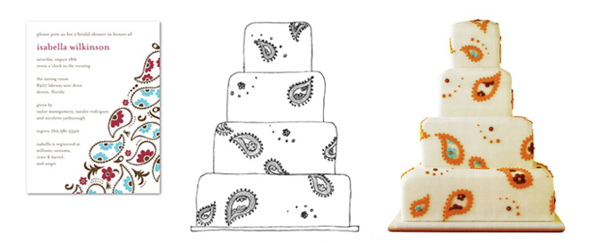

I personally meet with each of my clients to design a cake that is unique to your style, as well as catered to your tastes. Using a broad range of techniques, I create a truly spectacular cake that will be the perfect end to your big day. I take inspiration from your style to create a unique design for the special day.
I personally meet with each of my clients to design a cake that is unique to your style, as well as catered to your tastes. Using a broad range of techniques, I create a truly spectacular cake that will be the perfect end to your big day. I take inspiration from your style to create a unique design for the special day.
Design
I find inspiration in everything around me, from patterned fabrics and printed paper, to the angled architecture of a majestic building, to the intricacies of a cobweb stretched across a gap in a wire fence- anything can spark a fabulous design.
That’s why I encourage my brides to collect images and ideas for our tasting, whether they be invitations, china patterns, color swatches, floral arrangements or even something as abstract as the cozy dining room at a favorite cafe or a childhood memory of a lip-smacking ice-cream sundae.
Each cake is tailored to reflect your personal style, with no two cakes being alike. I focus on modern, elegant and playful designs, and on creating a stunning showpiece for your special day.